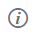

Step 1 - Retrieving the iPad Access Code from Feedback Studio
- From a desktop PC or Mac, sign in to the Keele Learning Environment (KLE) and navigate to the module which contains the Turnitin inbox you wish to mark student submissions for. If you are unsure how to do this, please see the guide at https://www.keele.ac.uk/turnitin/accessingsubmissions.
- From the Turnitin inbox, open any submission using the pencil icon (
 ).
). - On the right hand side of the document viewer, click the Information icon () and select Generate Code.
- The system will now generate a unique 16 digit code. Please keep a note of this code as it will be required for you to access all assignments on your iPad.